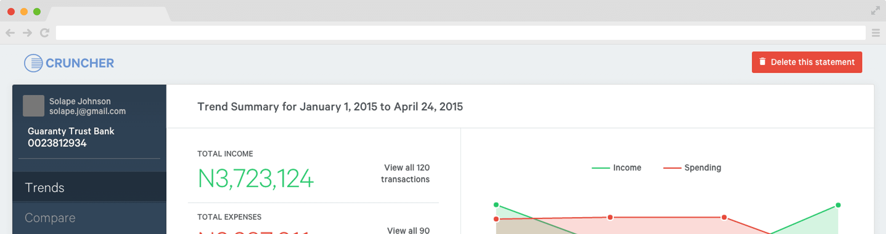

Cruncher helps you figure out how you're spending
Pull out the important numbers from your account and find out how you're earning and spending.

Cruncher was created to help people make better decisions with their money based on their history of spending it. It can be very reflective as to how you make and spend your money. It's also useful for plugging leaks in your account and searching for transactions.
Yes. A unique hash is created for your data which only you can access. You'll get a link to your email for reference, and can delete the records at any time.